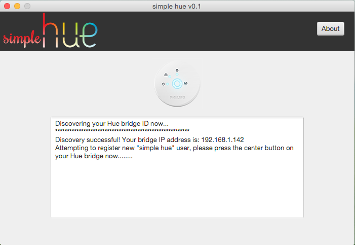

simple-hue
A simple Java program to control your Philips Hue lights
I designed this program as a simple way to toggle a single Hue light (namely, a lightstrip situated behined my TV). I didn't like the other options out there as they didn't offer quite what I was after. This program has a singular purpose - toggle the selected Hue light(s) on/off. That's it!
If you would like to request additional features, suggest improvements, etc. please feel free to email me here
- 

Notes
This program has been tested on Mac OSX 10.10 and Windows 8.1. You shouldn't have any trouble running on Linux either. The program will run an initial discovery and user registration phase, after which you will be presented with a configuration screen to determine which lights should be toggled, and what color they should be set to when turned on.
After building the configuration file the program will run silently (it will load the config, and determine whether to turn lights on or off, and to the color chosen).
If you would like to re-run the setup process simply deleted the associated config file.
Credit
A huge thanks to Blodjer for his HueImmersive program, which helped me get a huge jump start on this project, and also the PhilipsHueSDK for the RGB to XY conversion formula.